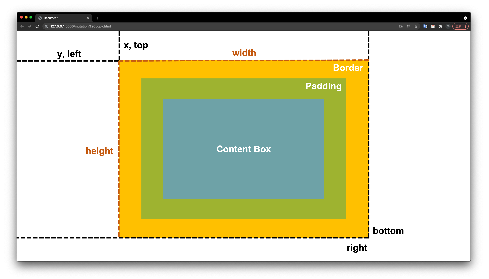

那些被忽略但很好用的 Web API / GetBoundingClientRect
Posted by Max on
小孩才做選擇，成年人當然是尺寸、座標全都要！
昨天介紹的 ResizeObserver API 可以觀察到元素的尺寸變動時執行回呼，並且會提供元素變動後的「尺寸」、「座標」等資訊，而今天介紹的 GetBoundingClientRect 雖然無法再觀察元素變動了，但我們可以主動出擊，直接索取目前元素的相關資訊。
GetBoundingClientRect
GetBoundingClientRect 可以使我們取得 Element 元素的寬高以及相對於視窗可視範圍(Viewport)的座標位置，對於前端老鳥來說可能不是那麼陌生，但對於新手來說，它不太會是第一批認識的 Web API，大部分可能都會先認識 clientWidth、scrollWidth、offsetWidth、scrollTop、clientTop、offsetTop…等等，這一大堆眼花撩亂讓人容易混淆的系列屬性。
# 元素的各種寬高與位置
為了讓各位更好的理解 GetBoundingClientRect，先來幫各位整理及複習前面提到的這一大堆元素屬性，
- offsetWidth / offsetHeight： 元素
borderBox的寬/高，包含padding、border - clientWidth / clientHeight： 元素
paddingBox的寬/高，包含padding，不包含border - scrollWidth / scrollHeight： 元素包含
padding及外溢內容的寬/高，不包含border
- offsetTop / offsetLeft： 元素
borderBox相對於offsetParent的垂直/水平距離 - clientTop / clientLeft： 元素
paddingBox相對於borderBox的垂直/水平距離 - scrollTop / scrollLeft： 元素
paddingBox被捲動的垂直/水平距離
# Element.getBoundingClientRect
其實剛剛介紹的眾多屬性，相信大家或多或少都有使用過，尤其在一些捲動事件中常常會出現它們的身影，不過在今天之後，你使用它們的機會可能會漸漸減少了。
getBoundingClientRect 的使用方式非常簡單，它屬於 Element 的原生 method，直接互叫即可：
const div = document.querySelector("div");
console.log(div.getBoundingClientRect());執行過後便會回傳一個 DOMRect 物件，該物件中就會有指定元素的相關尺寸與座標訊息：
- width： 元素的
borderBox寬度，相當於offsetWidth - height： 元素的
borderBox高度，相當於offsetHeight - x： 元素的
borderBox左上角相對於視窗的水平(Ｘ)座標 - y： 元素的
borderBox左上角相對於視窗的垂直(Ｙ)座標 - left： 元素的
borderBox左上角相對於視窗的水平(Ｘ)座標，等同x - top： 元素的
borderBox左上角相對於視窗的垂直(Ｙ)座標，等同y - right： 元素的
borderBox右下角相對於視窗的水平(Ｘ)座標 - bottom： 元素的
borderBox右下角相對於視窗的垂直(Ｙ)座標
DOMRect 跟昨天介紹的
ResizeObserverEntry.contentRect所回傳的 DOMRectReadOnly 格式是一樣的，但當中數值所代表的意義完全不同，不要被混淆囉。
有了這些資訊後，針對一些捲動事件的需求其實就會變得簡單許多，像是我們常常會做的事情是「判斷某元素是否進入可視範圍」，就可以來看看使用 getBoundingClientRect 後的差別：
const div = document.querySelector("div");
// 不使用 getBoundingClientRect
window.addEventListener("scroll", function (e) {
if (div.offsetTop + div.offsetHeight <= window.pageYOffset) {
console.log("元素底端已離開畫面");
} else if (div.offsetTop <= window.pageYOffset + window.innerHeight) {
console.log("元素頂端已進入畫面");
}
});
// 使用 getBoundingClientRect
window.addEventListener("scroll", function (e) {
const { top, bottom } = div.getBoundingClientRect();
if (bottom <= 0) {
console.log("元素底端已離開畫面");
} else if (top <= window.innerHeight) {
console.log("元素頂端已進入畫面");
}
});可以看到，如果不使用 getBoundingClientRect 需進行較複雜的計算，而且如果該元素的 offsetParent 不是 body 的話，這個計算就會出現 Bug。反之使用 getBoundingClientRect 的程式碼簡潔又容易理解，而且因為 top 和 bottom 的數值是直接相對視窗計算出來的，所以也不用去顧慮元素的 offsetParent。
小技巧： 利用
window.pageYOffset+getBoundingClientRect().top就可以計算出元素相對於文件(document)的絕對座標喔。
# 實際練習
為了讓大家更能感受到 getBoundingClientRect 的強大，我們來做一個 「動態 Highlight」 的小練習，需求是「當游標滑到文章中的粗體字時會自動添加底色，且底色在不同關鍵字之間切換時，要有移動的過渡效果」。先看效果：
.highlight {
position: fixed;
background: yellowgreen;
}const highlight = document.querySelector(".highlight");
const bold = document.querySelectorAll("b");
let hoverElement;
bold.forEach((el) => {
el.addEventListener("mouseenter", function () {
hoverElement = this;
highlight.style.transition = "0.3s";
setHighlight();
});
});
// 為了在視窗滾動時不會跑版，要在 scroll 進行重新定位
window.addEventListener("scroll", function () {
highlight.style.transition = "0s";
if (hoverElement) setHighlight();
});
function setHighlight() {
const { width, height, top, left } = hoverElement.getBoundingClientRect();
highlight.textContent = hoverElement.textContent;
highlight.style.width = width + "px";
highlight.style.height = height + "px";
highlight.style.top = top + "px";
highlight.style.left = left + "px";
}整體概念就是在指定的元素上綁定 mouseenter 事件，並在事件發生時使用 getBoundingClientRect 來取得該元素的尺寸座標資訊，然後將其設定在 Highlight 元素的樣式上。
不要認為這樣的功能效果好像很簡單，如果沒有 getBoundingClientRect 的話，做起來是特別麻煩的，想要實際玩玩看的話，這邊提供我已經寫好的 CodePen，並且也鼓勵大家發揮創意來試試看其他的應用，感受一下它的好用之處。
希望經過今天的介紹，各位已經開始愛上 getBoundingClientRect 了，我本身就蠻常使用的，比較記下一堆容易搞混的屬性，只需要一行我就可以取得那些經常使用的資訊，而且還可以剩下很多麻煩的計算，何樂不為呢？
- 此篇文章為「iT 邦幫忙鐵人賽」參賽文章，同步發表於 iT 邦幫忙 -